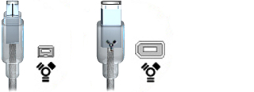

I don't know if I'm using a FireWire port or a USB port
To import footage directly from your camcorder into an iMovie HD project, you must connect the camcorder using the FireWire ports on the camcorder (or on your camcorder's docking system) and your computer. Some camcorders label the FireWire port "iLink" and some hide the port under a cover or door. Some cameras have both FireWire ports and USB ports (for downloading still images to iPhoto, for example).
The illustration below shows what FireWire cable connectors look like. Plug the 4-pin connector into your camcorder and the 6-pin connector into your computer. If you're still not sure if your camcorder has a FireWire port, check its manual.

Keep in mind that you need to switch your camcorder to VCR, VTR, or Play mode and turn the power on when you import to iMovie HD. It's a good idea to plug in your camcorder's AC adapter to prevent the battery from running down while you're importing.
If your camera uses an MPEG-4 solid-state card or has a USB port and not a FireWire port, you can transfer your video files to your computer using a USB cable. When you connect your MPEG-4 device to your computer using a USB cable, your camera or device appears as a hard disk on your desktop. You can then open the device's icon and drag the MPEG-4 files into your iMovie HD projects.
Related Topics
Connecting a camcorder to your computer
Importing video from your camcorder
Importing video from an MPEG-4 video camera
 Was this page helpful? Send feedback.
Was this page helpful? Send feedback.